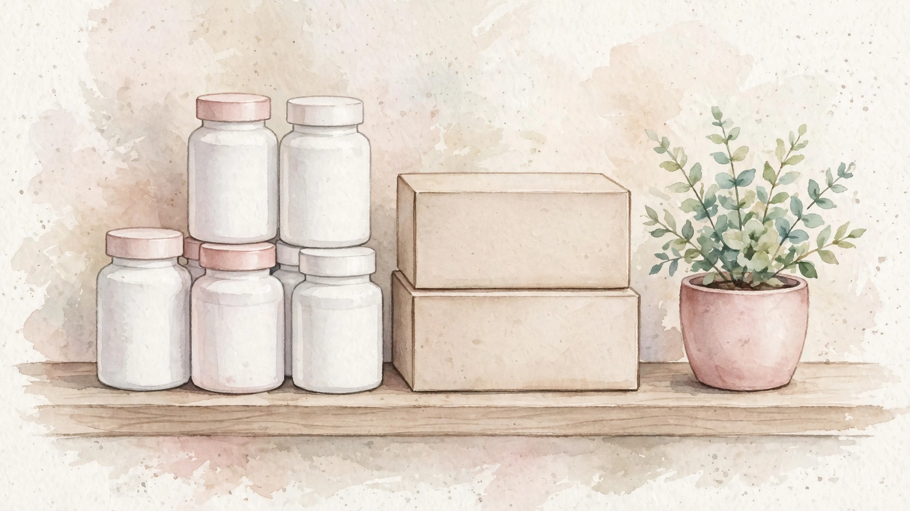

トップ ＞ インナーケア・サプリ ＞ 買い置きの量は、賞味期限から逆算する
買い置きの量は、賞味期限から逆算する

まとめ買いや定期便で、気づけば棚に同じサプリメントが何袋も並んでいた、という経験はないでしょうか。買い置き自体は悪いことではありませんが、上限を決めずに増やすと、賞味期限との競争になります。この記事では、買い置きの量を賞味期限から逆算して決める考え方を整理します。
まず消費ペースを数字にする
逆算の出発点は、自分の消費ペースです。表示の一日摂取目安量が分かれば、「1袋（○日分）を何日で使い切るか」が計算できます。たとえば1袋が30日分なら、1か月に1袋というペースです。複数の商品を併用している場合は、商品ごとにこの数字を持っておきます。
次に、手元の在庫を数えます。開封中のものと未開封のものを分けて数えると、「あと何日分あるか」が見えてきます。この「日数換算」が、買い置き管理の基本の物差しです。
賞味期限と並べて、上限を決める
在庫の日数と、未開封の賞味期限を並べてみます。消費ペースで使い切る予定の日が、賞味期限より十分手前であれば問題ありません。逆に、使い切る前に期限が来そうな量は、買い置きの上限を超えています。セールやまとめ買いの割安さに目が行きがちですが、期限内に使い切れない分は、結果として無駄になります。
保管場所でも工夫ができます。期限の早いものを棚の手前に、遅いものを奥に置く並べ方です。開封した日付を容器に書いておくと、開封後の目安とも照らし合わせられます。私は「期限の早い順に使う」が目で見て分かる並べ方を勧めています。
在庫メモは、定期便の調整にも使える
買った日、賞味期限、残りの日数分を書いた簡単なメモがあると、買い足しの判断が速くなります。定期便を利用している場合は、このメモが間隔変更や休止を考える材料にもなります。「まだ2袋あるから次回は間を空ける」といった判断は、在庫が見えているからこそできることです。
買い置きは、安心感のためにあるものです。期限から逆算して上限を決めておけば、慌てて使い切ることも、余らせることも減ります。棚卸しは月に1回程度、買い物の前に在庫を眺める習慣から始めてみてください。
余りが見えたときの選択肢
逆算してみて買い置きが多すぎると分かったら、選択肢はいくつかあります。定期便であれば、休止や間隔変更の条件を確認して調整する方法があります。誰かに譲る場合は、未開封で期限に余裕があることを伝え、表示のあるパッケージごと渡すのが基本です。粒だけを分ける譲り方は、情報が切り離されるので避けてください。
どうしても使い切れないものは、無理に消費しようとせず、お住まいの自治体の分別ルールに沿って処分します。もったいないと感じる場面ですが、その経験が次回の買い置きの上限を決める材料になります。買い置きの管理は、計算と棚卸しの繰り返しで少しずつ合ってくるものです。最初から完璧を目指さず、月に1回の確認から始めてみてください。
保管場所についても、在庫が増えるほど条件が大切になります。高温多湿を避けるという表示の前提は、買い置きの分にも同じく当てはまります。棚の奥に長く置く分ほど、期限と開封状態の確認を忘れやすくなるため、在庫メモには保管場所も書いておくと管理が楽になります。
買い置きの棚卸しは、買い物の前の短い時間でできます。在庫の日数と期限を眺め、「今月は買わなくてよい」という判断ができれば、それが逆算の成果です。買わない判断も、表示と在庫を読めているからこそできる選択です。
家族が同じ商品を使っている家庭では、在庫は世帯全体で数えます。誰かが買い足す前に在庫メモを確認する約束にしておくと、二重の買い置きを防げます。
セラフィナ「買い置きは期限から逆算。余らせるより、ちょうどが気持ちいいね」